1まずは言葉の説明
ホームページを公開するには、「住所」と「土地」が必要です。お店を建てるときと同じように考えてください。
＝ ホームページの住所
例：madetail.jp
この住所を入れると、お店のホームページが開きます。
＝ ホームページを建てる土地
ホームページのデータを置いておく場所です。
＝ 土地に建てるお店
こちらはクラレオが作ります。
今回使う2つの会社
| スタードメイン | 住所（ドメイン）を買う会社です。日本の会社です。 費用：1年目 1,900円、2年目からは毎年 3,201円（「.jp」の場合・税込） |
|---|---|
| Cloudflare （クラウドフレア） | 土地（サーバー）を無料で貸してくれる会社です。アメリカの会社ですが、画面は日本語にできます。 費用：0円（無料のまま使います。お支払い情報の入力も不要です） |
なぜ、お店さまの名前で登録するの？
家や土地と同じで、ホームページの住所と土地の持ち主は、お店さまです。クラレオの名前で登録してしまうと、将来クラレオとのお付き合いがなくなったときに、お店さまが自由に使えなくなってしまいます。そうならないように、最初からお店さまの名前で用意していただきます。
お店さまにお願いすること・クラレオがやること
| お店さま | 2つの会社に登録して、クラレオを「お手伝い役」として招待する（この手順書の手順1〜3と5） |
|---|---|
| クラレオ | 招待を受けて、ホームページを公開するための難しい設定をすべて行う |
2始める前に用意するもの
- パソコン（スマホでもできますが、入力する項目が多いのでパソコンがおすすめです）
- メールアドレス（ふだん見ているもの。確認のメールが届きます）
- クレジットカード（ドメイン代 1,900円のお支払い用。コンビニ払い・銀行振込も選べます）
- 紙とペン（パスワードを書いておくため）
- LINEでお伝えしたドメイン名（例：madetail.jp）
メモ用の表（印刷するか、紙に書き写してください）
| 取ったドメイン名 | |
|---|---|
| スタードメインのメールアドレス | |
| スタードメインのパスワード | |
| Cloudflareのメールアドレス | |
| Cloudflareのパスワード |
3全体の流れ
- 1スタードメインでドメインを取るお店さま
約15分 - 2Cloudflareに登録するお店さま
約5分・無料 - 3クラレオを招待するお店さま
約5分 - 4つなぐ設定をするクラレオ
終わったら、LINEで「2つの文字」をお送りします - 5最後の設定を1か所だけお店さま
スタードメインで、お送りした文字を貼り付けるだけ（約5分）
4【手順1】スタードメインでドメインを取る
画面の写真は、例として「madetail.jp」を取る場合のものです。赤い枠のところを押してください。
-
スタードメインのページを開きます。
パソコンの検索で「スタードメイン」と調べるか、次の住所を開いてください。
https://www.star-domain.jp/ -
少し下にある「まずは欲しいドメイン名を検索！」の欄に、ドメイン名を入れて「検索」を押します。
入れるのは「.jp」の前の部分だけです。例：madetail.jp なら madetail
-
「お申込内容の選択」で、右側の「ドメインのみ申込」の「選択する」を押します。
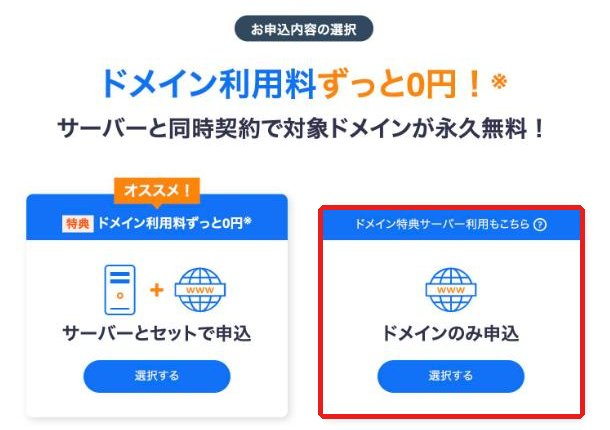
左の「サーバーとセットで申込（オススメ！）」は選ばないでください「オススメ」と書いてありますが、有料のサーバーの契約になります。サーバーはCloudflareで無料のものを使うので、必要ありません。 -
その下の検索結果で、「.jp」の四角にチェックを入れます。
右側のボタンがオレンジ色の「選択中」になっていることを確かめてから、一番下の「取得手続きに進む」を押します。
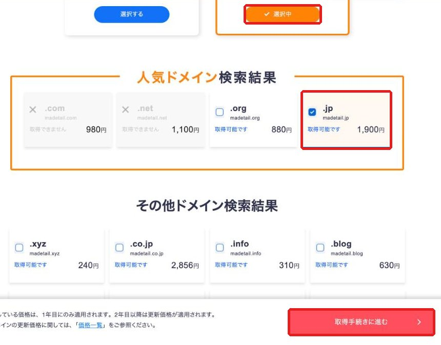
「取得できません」と出たときほかの人がすでに使っている住所です。何もせず、LINEでご連絡ください。別の候補をお伝えします。 -
「申し込み内容の確認」が出ます。契約期間は「1年」のままで、金額が1,900円になっていることを確かめて、「取得手続きに進む」を押します。
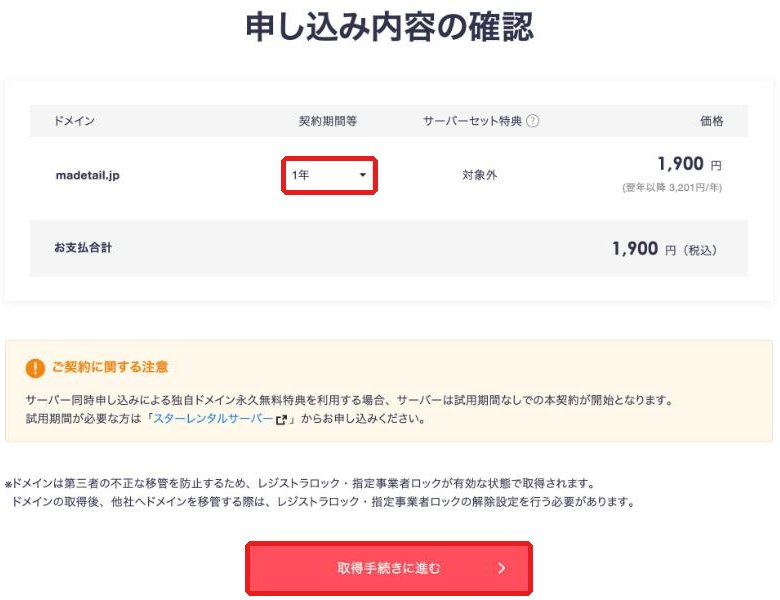
-
「ログイン・アカウント登録」の画面になります。初めての方は、左側の「Star8アカウントの登録へ」を押します。
「Star8（スターエイト）」は、スタードメインの会員登録の名前です。
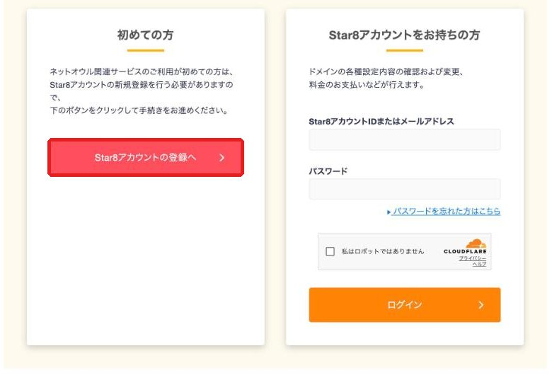
-
お店さまの情報を入れていきます。「必須」と書いてある欄はすべて入れてください。
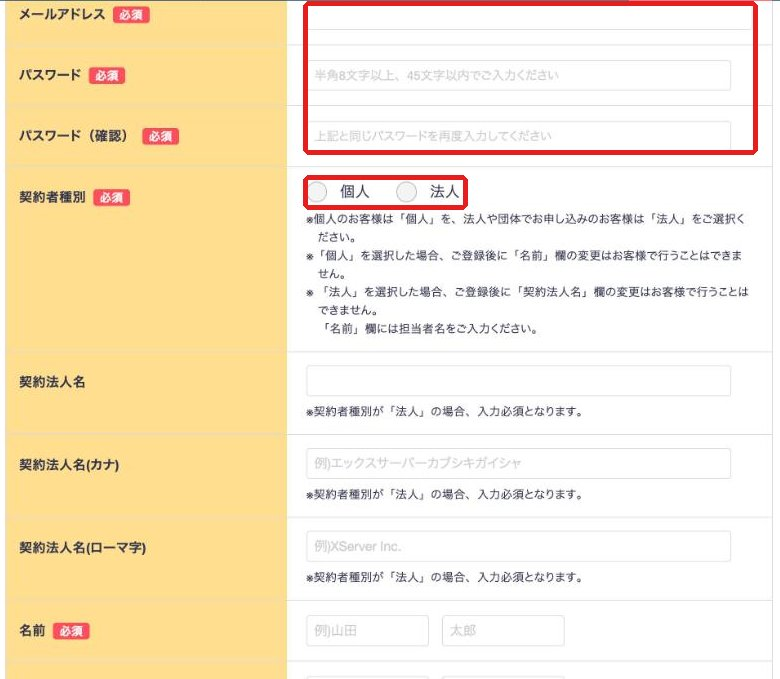
メールアドレス ふだん見ているメールアドレス パスワード 半角の英語と数字で8文字以上。メモ用の表に書いてください パスワード（確認） 上と同じものをもう一度 契約者種別 個人事業の方は「個人」、株式会社などの会社の方は「法人」
※あとから名前を変えられないので、気をつけて選んでください契約法人名など 「法人」を選んだ方だけ入れます。「個人」の方は空けたままで大丈夫です -
名前と住所を入れます。
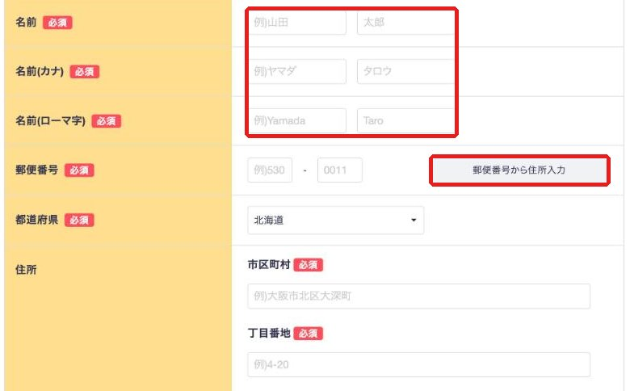
名前・名前(カナ) 代表者さまのお名前 名前(ローマ字) 例：山田 太郎 → Yamada Taro 郵便番号 入れたあと「郵便番号から住所入力」を押すと、都道府県と市区町村が自動で入ります 住所 お店の住所。「丁目番地」には番地の数字を入れます（例：2-13-16） -
「住所(ローマ字)」を入れます。ここがいちばん迷いやすいところです。
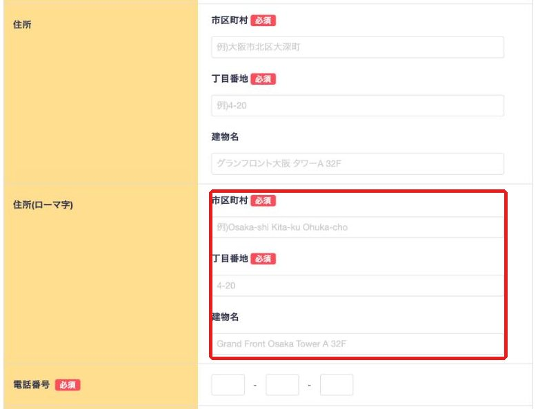
市区町村 例：山梨県甲府市丸の内 → Kofu-shi Marunouchi 丁目番地 数字はそのまま。例：1-2-3 建物名 なければ空けたままで大丈夫です ローマ字がわからないとき「〇〇市」は「〇〇-shi」、「〇〇町」は「〇〇-cho」と書けば大丈夫です。地名の読み方がわからないときは、LINEで住所を送っていただければ、ローマ字にしてお返しします。 -
電話番号を入れて、一番下まで進みます。
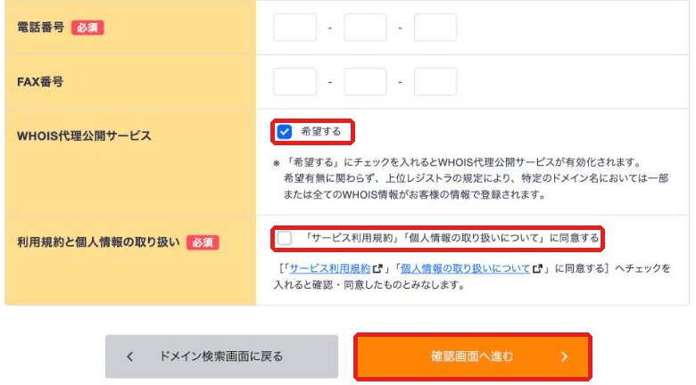
電話番号 お店の電話番号（携帯でも大丈夫です） FAX番号 なければ空けたままで大丈夫です WHOIS代理公開サービス 「希望する」にチェックが入ったままにします
（お店さまの住所や電話番号が、インターネット上に公開されにくくなる無料のサービスです）利用規約と個人情報の取り扱い チェックを入れます 最後に「確認画面へ進む」を押します。
-
このあと「お支払い情報の入力」→「内容の確認・規約への同意」→「お申込み完了」と進みます。
ここから先は、実際に申し込まないと画面が出ないため、写真はありません。次のとおりに進めてください。
お支払い方法 クレジットカードがおすすめです（すぐに手続きが終わります）。コンビニ払い・銀行振込も選べます 確認の画面 ドメイン名と金額（1,900円）が合っているか見て、「同意する」にチェックを入れ、「申し込む」を押します 完了 スタードメインから、お申し込みの内容とお支払いのメールが届きます 途中で「サーバー」や「オプション」をすすめられたらすべて選ばずに進めてください。追加で必要なものはありません。これで手順1はおしまいです取ったドメイン名を、メモ用の表に書いておいてください。
5【手順2】Cloudflare（クラウドフレア）に登録する
無料の「土地」を借りるための登録です。お支払い情報の入力はありません。
-
Cloudflareの登録ページを開きます。
https://dash.cloudflare.com/sign-up
-
画面が英語のときは、右上の「English」を押して、「日本語」を選びます。
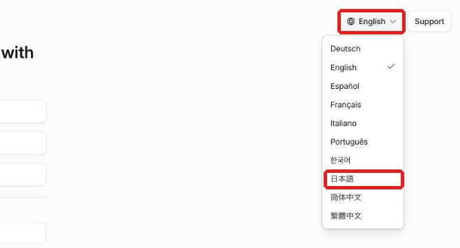
-
メールとパスワードを入れて、「サインアップ」を押します。
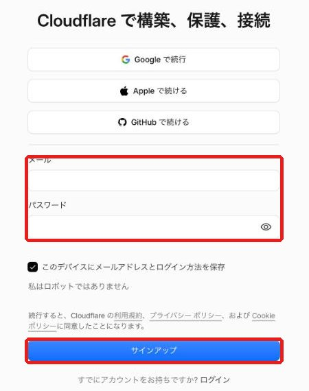
メール ふだん見ているメールアドレス パスワード 画面に出る条件どおりに作ってください。メモ用の表に書いてください 「私はロボットではありません」が出たとき四角にチェックを入れてください。 -
Cloudflareから確認のメールが届きます。メールの中のボタン（またはリンク）を押してください。
メールが届かないとき「迷惑メール」のフォルダに入っていることが多いです。英語のメールです。 -
ログインしたあと、「ドメインを追加」「プランを選ぶ」などの画面が出ることがあります。
そこでは何も入力・購入しないでくださいドメインの追加などはクラレオが行います。左上のオレンジ色の雲のマークを押すと、ホームの画面に戻れます。これで手順2はおしまいですそのまま手順3に進んでください。
6【手順3】クラレオを招待する
クラレオを「お手伝い役」として招待します。こうすることで、お店さまのパスワードを教えていただかなくても、クラレオが設定作業をできるようになります。
-
Cloudflareの画面の左側のメニューを一番下まで見て、「アカウントの管理」を押し、出てきた「メンバー」を押します。
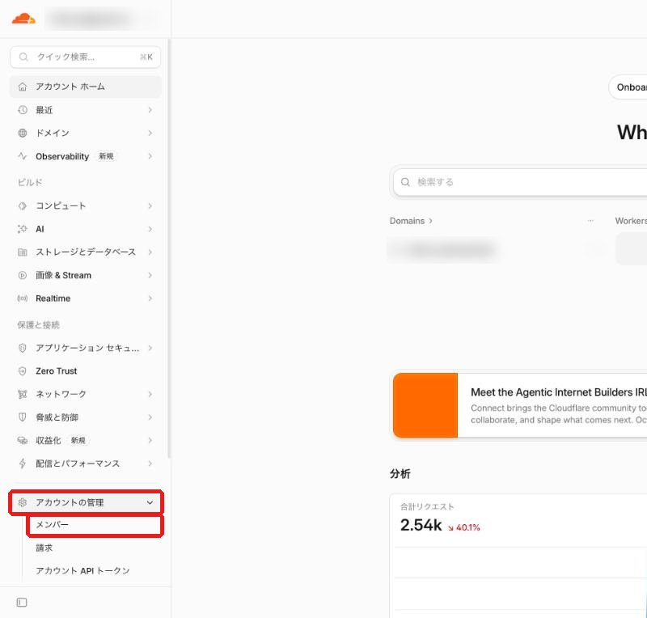
※写真はクラレオの画面です。お店さまの画面では、真ん中に表示される内容が違います。 -
右上の青いボタン「＋メンバーを招待」を押します。
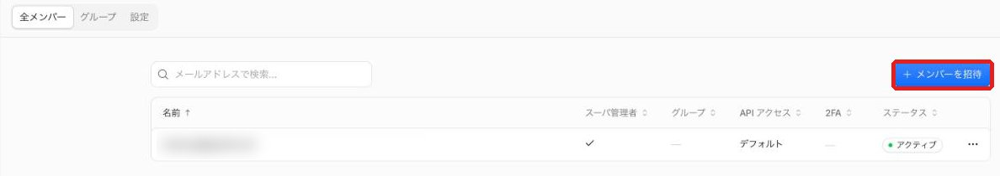
-
一番上の「メールアドレスを追加する」の欄に、次のメールアドレスを入れます。
clareo.jp@gmail.com
その下の一覧から「Administrator」（アドミニストレーター＝管理者）の行を探して、右端のスイッチを押してオンにします。
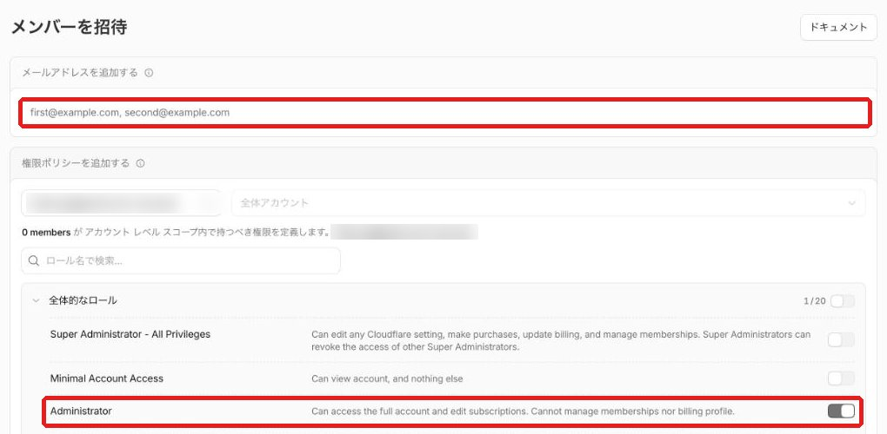
「Super Administrator」ではありません上から3番目の、ただの「Administrator」です。お間違えのないようにお願いします。 -
画面を一番下までスクロールして、右下の「ポリシーを作成」を押します。
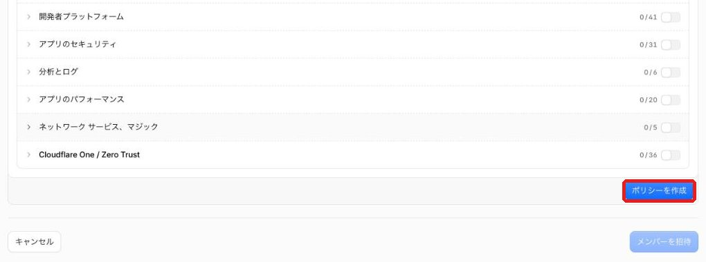
-
「役割：Administrator」と表示されたことを確かめて、右下の「メンバーを招待」を押します。
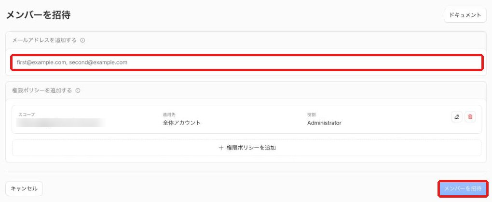
これで手順3はおしまいですクラレオに招待のメールが届きます。
7終わったら、LINEで一言
クラレオの公式LINEに、次のようにお送りください。
「手順1〜3が終わりました。ドメインは 〇〇〇〇.jp です」
そのあと、クラレオで「手順4」の設定を進めて、手順5で使う2つの文字をLINEでお送りします。
8【手順5】最後の設定（クラレオからLINEが来てからお願いします）
住所（ドメイン）と土地（Cloudflare）を「つなぐ」ための設定です。クラレオからLINEで届いた2つの文字を、スタードメインに貼り付けます。
2つの文字は、例えばこのような形です：〇〇〇〇.ns.cloudflare.com
-
スタードメインのログイン画面を開いて、手順1で作ったメールアドレスとパスワードでログインします。
https://secure.netowl.jp/starapanel/login/stardomain
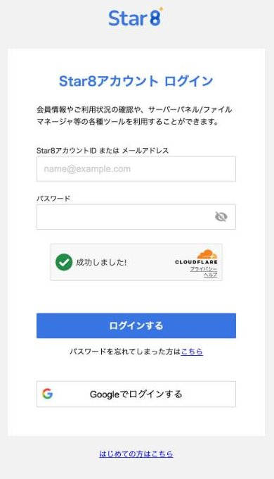
-
トップページの「ドメイン」の一覧から、取ったドメイン名を押します。
-
「ネームサーバー設定」のところにある「設定変更」を押します。
-
「他のネームサーバーを使う」にあたる項目を選んで、LINEで届いた2つの文字を1行ずつ貼り付けます。
そのあと「確認画面へ進む」→「設定を変更する」を押せば完了です。
この手順5は、写真がありません画面の名前が少し違うときや、どこかわからないときは、画面の写真（スクリーンショット）をLINEで送ってください。次に押すところをお伝えします。 -
終わったら、LINEで「変更しました」とお送りください。
反映されるまで数時間〜1日ほどかかります。クラレオで確認して、ご連絡します。これで準備はすべておしまいです。
9困ったときは
途中で画面を閉じてしまいました
大丈夫です。手順1の途中なら、もう一度最初から進めてください。お申し込み（「申し込む」ボタン）を押す前なら、お金はかかっていません。アカウントの登録だけ済んでいる場合は、「Star8アカウントをお持ちの方」の欄からログインして進めます。
「取得できません」と出ました
その住所は、ほかの人がすでに使っています。何もせず、LINEでご連絡ください。別の候補をお伝えします。
パスワードを忘れました
スタードメインもCloudflareも、ログイン画面に「パスワードを忘れた方」のリンクがあります。そこから、登録したメールアドレスで作り直せます。
確認のメールが届きません
「迷惑メール」のフォルダを見てください。それでも届かないときは、登録したメールアドレスが合っているか確かめて、LINEでご連絡ください。
うっかり「サーバーとセット」で申し込んでしまいました
すぐにLINEでご連絡ください。スタードメインへの連絡のしかたをご案内します。
来年からの更新はどうなりますか？
ドメインは毎年の更新が必要です（2年目からは毎年3,201円）。更新の時期が近づくと、スタードメインからメールが届きます。更新をしないと、ホームページが見られなくなってしまうので、忘れずにお手続きください。
Cloudflareから英語のメールが来ました
多くはお知らせのメールです。お支払いを求めるメールが来ることはありません（無料のまま使うため）。気になるメールがあれば、LINEで画面の写真を送ってください。
どこで止まっても、画面の写真（スクリーンショット）をLINEで送っていただければ、次に押すところをお伝えします。
スクリーンショットの撮り方：Windowsは「Windowsキー＋Shift＋S」、Macは「command＋Shift＋4」。スマホで画面を撮影していただいても大丈夫です。